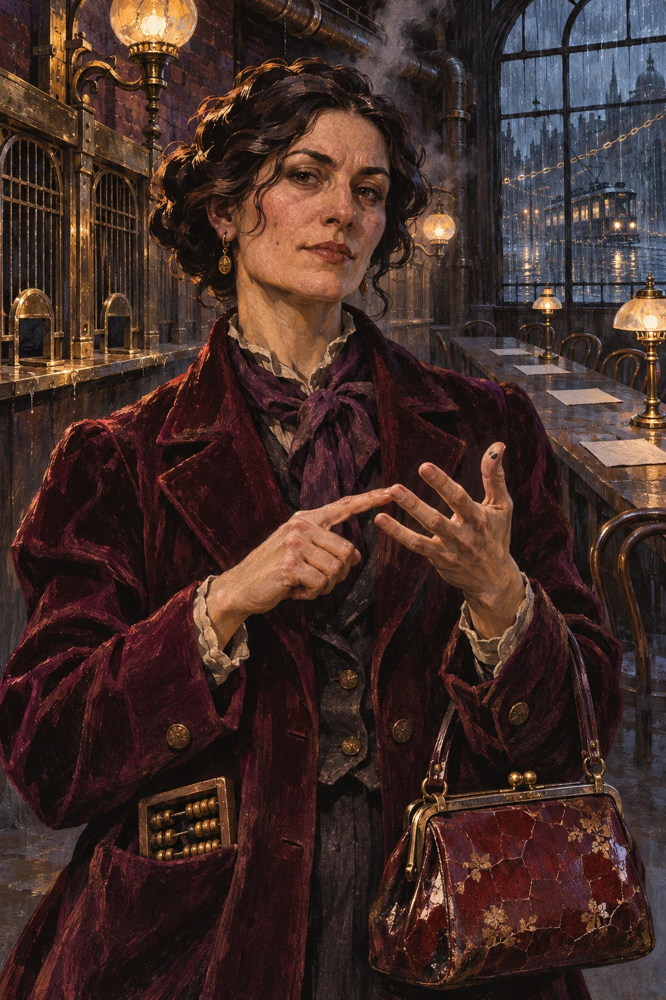
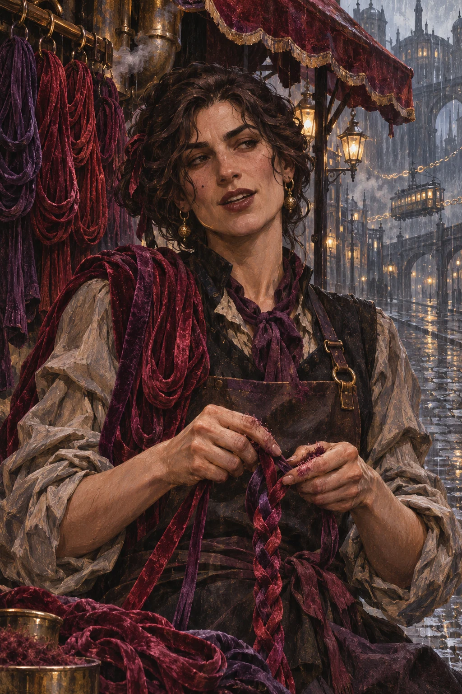

Пережить опись дома Отека, понять лот, тикер, кассу и выкуп и ответить на первый утренний колокол Бархатной биржи.
Виктор Дорн

Левна НорБальтазар ТильКорнель ШайЛукаш Крин

Луиза Тамм
Если партия изменила план
Группа отказалась от задания
Не берёмся выкупать дом. Найдём Яну крышу на случай торгов. Спрашиваем Яна, у кого он хочет остановиться. Приставы продолжают опись. Ян выбирает комнату у артели; суд получает адрес для уведомления, долг остаётся в Книге.
Рассвет на Шнуровом ряду пахнет мокрой пенькой и чернилами. Дом номер семь — узкий, над бывшей швейной, с латунным колокольчиком над дверью на шнуре цвета старого вина. Двое приставов Бархатного дома встают по сторонам двери: бархатные шнуры через плечо, ярлыки на кольцах позвякивают, как ключи. Человек в серых перчатках вежливо стучит в открытую дверь: «Опись имущества должника Яна Отека. Двадцать шесть колоколов. Лот выставлен к последнему колоколу квартала — через восемь торговых дней».
Над порогом лежит тень — плотная, с ровными краями, — и, когда солнце выходит из-за крыш, она не сдвигается ни на палец. Соседи смотрят из-под навесов молча: сапожник напротив не поднимает глаз от подошвы, шнурница у соседней лавки не перестаёт плести. На Шнуровом ряду такие тени видели и раньше, но не над этим порогом. Пристав дёргает шнурок колокольчика над дверью. Язычок качается — и колокольчик молчит.
Подготовка и роли
ДОСКА («Биржевая доска»; ведущий пишет на виду, вслух с причиной: «Долг +3 — пеня»). Долг 26 — лот Отека в колоколах. Касса 4: по колоколу у шести героев ядра минус два, отданных Яном за похороны; седьмой и восьмой Кассу не меняют. Строка мелкого должника — номинал 4 (Лукаш, Луиза), в Кассе — 3. Курс Дома 12. Разрыв = Долг − Касса; старт 22 — Караул. Взнос снижает Долг, лот покрывается только на 12-м ударе последнего колокола. УТРЕННИЙ КОЛОКОЛ (вечер 1 — сцена 2, дальше — сцена 1). Корнель бьёт раз; Бальтазар называет три бумаги, бумагу дня — со ставкой: что даёт «беру» и чем кончится молчание; скрытых запретов нет. Стол отвечает одним голосом, каждый вечер следующее место по кругу. Лот: «держу» — преимущество на первую сделку дня; «беру N» (от 2 до Кассы, раз за утро) — Касса −N, Долг −3 при N = 2, −N−2 при N от 3; молчание — Долг +2. Бумага дня: «беру» — днём её разыгрывают с броском, молчание — только без броска, «держу» — когда она уже у стола. Пай до вечера 7 только слушают. Никого не просят называть что-то о себе. ВЕЧЕРНИЙ КОЛОКОЛ (конец сцены 3, по порядку): пеня Долг +3; ходы Дома из заметки вечера (объявляет судья); доход Касса +А÷2 вниз (в вечер 6 нет); порог; закрытие — в вечерний столбец. ПОРОГИ. До 10 Тихо — приставы раз в день проверяют ярлыки. 11–20 Опись — двое приставов утром и вечером, дом открыт. 21–30 Караул — пост день и ночь; войти — Скрытность или Убеждение Сл 12, без броска Ольга. 31–40 Вывоз — на колоколе две вещи по порядку описи уходят на склад биржи. 41+ Молоток — то же, и в последнем колоколе каждая Надбавка +1. До колокольчика (13-я вещь) вывоз не доходит. СДЕЛКИ (один бросок, помощник — преимущество, путь без броска есть всегда). Артель: строка за 2 (Убеждение или Проницательность Сл 12) или за 3 без броска; А +1; пределы: вечер 1 — 2, 2 — 4, 3 — 2, 4 — 2, 5–6 — нет; риск — отзыв займов в вечер 6. Слух (вечера 2–7, один за вечер, на найденной улике): Убеждение или Выступление Сл 13 — Касса +3, Курс −1; провал — Касса +1; «по низу» — Касса +1, Курс −1; без улики — иск, Долг +3. В счёт Аскара идут листы вечеров 2–7 и лист набега. Залог: Касса +5 (Анализ Сл 12 — +6), один открытый, выкуп на вечернем колоколе 7 за 6, иначе вещь Дому. Бумага судьи и Шорт — в заметках вечеров 3 и 7. Пока строк меньше шести, доход ниже пени. БОЛЬШОЙ СТОЛ: в сценах 2–3 вторая пара ведёт свою задачу (последний выбор сцены); седьмой и восьмой получают зацепки в вечера 2, 4, 6, от них ничего не зависит. КОНЕЦ ВЕЧЕРА 1: осторожный 29/5/12, А 1 (разрыв 24, Караул); средний 29/7/12, А 2 (22); с залогом 29/12/12 (17, Опись). Перерыв 15 минут перед сценой 3.
Ян Отек — опись собственного дома, первый ответ утреннему колоколу и звон над своей дверью.
Ольга Брандт — узел на тринадцатом ярлыке и разговор с постом приставов на их языке.
Даниил Кест — цифры доски: лот, взнос и пустое поле второй руки на копии строки 241.
Сцена 1 · 50 минут
Бархатные шнуры
Человек в серых перчатках первым переступает порог и снимает с кольца первый ярлык. Внутри узко и тепло: печь-обещание ещё держит жар, у стены кровать под бархатным пологом, у окна швейная машина, со стены смотрит портрет хозяйки дома в тёмной раме. Приставы идут следом и вяжут ярлыки на каждую вещь; номера на бирках выведены мокрыми чернилами. В Вельтене опись по обычаю начинают с печи: самое дорогое в доме — тепло. Ворс бархатных шнуров цепляется за ручки ящиков, бирки тихо постукивают друг о друга. Человек в перчатках кладёт ладонь на тёплый бок печи. «Виктор Дорн, опись Бархатного дома, — говорит он ровно. — Вещь первая».
Рассвет, Шнуровой ряд, 7. Виктор Дорн в серых перчатках ведёт приставов по комнатам, на каждую вещь — ярлык на бархатном шнуре. Дорн читает номерами: «Вещь первая — печь-обещание, шесть. Вещь вторая — кровать с бархатным пологом, три…» Каждый герой ядра пришёл по своей строке: Ольга узнаёт сослуживцев, Агния — двух должников кассы, Павел — тень без груза, Ульяна — дом, который смена просила проводить, Даниил — цифру 26 с табло. Кто тронет ярлык, тому Дорн ровно: «Не трогайте ярлык. Ярлык — уже не ваша вещь, это наша запись о ней». Пристав дёргает шнурок колокольчика — тишина. Ян толкает дверь изнутри — чистый звон на весь ряд. Лукаш Крин, не поднимая глаз от подошвы: «Тридцать лет чиню твой порог, Ян. И тридцать лет над ним звенит эта медяшка». Последний ярлык Дорн вешает на колокольчик, на двойном шнуре, и задерживает пальцы: «Тринадцать. Пусть висит, где висел». В описи тринадцать вещей, оценка 27; лот — 26.
Выборы
Ольга требует копию описи по кодексу приставов — Дорн выдаёт ярлык описи («Ярлык описи»); иначе оставляет копию на столе.
Спорить о каждой вещи: Дорн отвечает номером и оценкой и ничего не снимает.
Смотреть, на что смотрит сам Дорн, пока приставы работают.
Спросить Лукаша и Луизу, что звенит над этой дверью и когда.
Проверка и путь без броска
Проницательность Сл 12: Дорн дважды возвращается к ярлыку тринадцать и проверяет узел — вещь в один колокол ему дороже печи. Без броска Ольга по своему шнуру («Служебный шнур Ольги») читает узел на тринадцатом: «хранить до молотка — особо»; второго такого в доме нет. Немой колокольчик видят все у двери, без броска. Доска не меняется: Долг 26, Касса 4, Курс 12.
Если не получилось
Если на Дорна и узлы никто не смотрит, Луиза Тамм, проходя под навесом с мотками на плече, шепчет Яну, не переставая плести: «Двойной шнур — я его плела. Один на всю осень». Если звон никто не заметил, Лукаш говорит вслух приставу: «У него звенит, у тебя нет».
Сцена 2 · 50 минут
Первый утренний колокол
Бархатная биржа в восьмом часу гудит, как улей под крышкой. Бархатные перегородки делят пол на загоны, на табло цен поблёскивают медные таблички, посреди пола пустует кафедра, а под потолком висит медный колокол размером с бочку. В боковой стене за решёткой темнеет ломбардное окно. На полу здесь не дерутся: кто поднимет руку на человека, того судья колокола выводит сам. От перегородок навстречу вам быстро идёт женщина в аккуратном пальто, с потрескавшейся лакированной сумкой; на большом пальце у неё чернильная точка. «Левна Нор, переписчица, — говорит она и протягивает разлинованную доску. — Держите. Сейчас ударят. Слушайте цены и не молчите».
Бархатная биржа, восьмой час. Левна Нор даёт отряду правила («Правила пола Бархатной биржи») и кладёт на стол доску («Биржевая доска»); впишите старт — 26, 4, 12. Левна считает на пальцах: «Шесть рук — шесть колоколов. Минус два за похороны. Касса — четыре». Корнель Шай бьёт раз: «Удар засчитан». Бальтазар Тиль: «Лот Отека — двадцать шесть. Кто держит?» — «Бумага дня: строки Шнурового ряда, две, — по два, кто берёт с пола; после удара — по три». — «Пай Бархатного дома — двенадцать». Левна: «Лот — это ваш дом в цифре. Касса — всё, чем вы можете ей ответить. Отвечайте вслух: молчание биржа пишет как согласие». У стены — открытый реестр: копия строки 241, чернила не сохнут; за решёткой ломбардное окно: «Пять колоколов под вещь». Днём на ряду Лукаш Крин: «Четыре колокола Дому за кожу. Купите строку — войду, куда скажете». Луиза Тамм плетёт: «И я должна четыре. Войду в вашу артель, если меня не опишут». Взыскатель Дома ждёт под навесом с их бумагами.
Выборы
Лот: «держу» — преимущество на первую сделку; «беру 2» — Касса −2, Долг −3; «беру 3/4» — Касса −N, Долг −N−2; молчание — Долг +2.
Бумага дня: «беру» — строки Лукаша и Луизы днём с броском, по 2; молчание — по 3 без броска.
Купить на ряду строки Лукаша и Луизы: каждая строка — А +1.
Ломбардное окно: заложить свою вещь за 5, выкуп на вечернем колоколе вечера 7 за 6.
Подойти к открытому реестру и прочесть копию строки 241.
Вторая пара первой идёт на Шнуровой ряд к Лукашу и Луизе — от разговора зависит, по чём войдут строки (А, Касса).
Проверка и путь без броска
Взнос: «беру 2» — Касса 2, Долг 23; «беру 3» — 1 и 21; «беру 4» — 0 и 20. Строки: Убеждение или Проницательность Сл 12 (помощник или «держу» — преимущество): строка за 2, в Кассе 3 — Касса +1, А +1; провал или без броска — за 3: Касса 0, А +1. Предел вечера — две. Анализ Сл 12 на копию строки 241 («Строка без второй руки»): поле второй руки пустое — Ян долга не подписывал; без броска Левна покажет его вечером. Залог: Анализ Сл 12 — Касса +6, без броска +5; вещь с ярлыком описи окно не берёт, колокольчик — только как продажу Дому. Шнур Ольги или хроноскоп Павла, не выкупленные к вечеру 7, уходят Дому.
Если не получилось
Молчание по лоту: Бальтазар повторяет цену громче, после второго молчания Корнель: «Молчание засчитано» — Долг +2 (26→28), и Левна на пальцах объясняет, чем «держу» отличается от тишины. Молчание о бумаге дня — строки по 3 без броска. Не дошли днём до ряда — оба ждут под навесом до колокола, по 3.
Сцена 3 · 50 минут
Вечерний колокол
К вечеру на Шнуровом ряду зажигают фонари на крюках навесов, там, где днём висели мотки шнура. Тень у порога дома номер семь лежит, как лежала утром, и свет фонаря её не трогает. У двери меняются приставы: новый, молодой, переминается с ноги на ногу и греет руки о кружку. Соседи несут в лавки кто хлеб, кто моток пеньки: на ряду, если у соседа над порогом легла тень, утешать его не принято — ему приносят работу. С канала тянет сыростью. Над крышами тяжело и медленно ударяет вечерний колокол биржи, и весь ряд, не сговариваясь, поднимает головы.
Вечер на Шнуровом ряду. Агния объясняет тень у порога: долг, вписанный в Книгу, лежит на пороге должника, пока строка открыта. Павел наводит хроноскоп на копию строки 241: тридцать семь дней — столько чернила не сохнут, значит, строку вписали через три дня после смерти Ирены. На закате — вечерний колокол: пеня, ходы Дома (сегодня нет), доход, порог. Бальтазар читает закрытие по вашей доске: «Лот Отека — двадцать девять. Пай — двенадцать». В конторе «Последний час» Левна над счётами, на пальце чернильная точка: «Я переписывала эту строку. Одна рука. Я видела — и поставила точку». У двери номер семь меняются приставы; старший спрашивает: «Хозяин ночует здесь?» Лукаш, запирая мастерскую: «Порог тебя помнит, Ян. Пост — нет».
Выборы
Где ночует Ян: дома под постом или в конторе у Левны.
Что сказать посту приставов у двери: просить, спорить или молча пройти.
Спросить Левну, почему она поставила точку, — она отвечает только про строку 241.
Вторая пара идёт к посту у двери дома номер семь и договаривается, как Ян войдёт домой (Убеждение Сл 12 или Ольга без броска).
Проверка и путь без броска
Колокол: пеня Долг +3; доход Касса +А÷2 вниз (одна строка — 0, две — +1); порог по разрыву Долг − Касса. Пост: Убеждение Сл 12 — пристав пускает Яна домой без досмотра. Без броска Ольга договаривается с бывшими сослуживцами: «Шнур я сдала, а не совесть». Если копию строки 241 днём не прочли, Левна сама показывает пустое поле второй руки («Строка без второй руки»). Если строки днём не купили, Лукаш и Луиза отдают их до колокола по 3 без броска (А +1, Касса 0; предел вечера — две).
Если не получилось
Если после колокола разрыв 21+ (держали и купили одну строку с броском: 29 − 5 = 24), Дорн при всех ставит пост, и пристав пишет в книжке: «Караул». Провал с постом — Яна досматривают у порога, но пускают: описанный дом всё ещё его. Без залога и взноса разрыв почти у всех 22–24.
Немой колокольчик
Латунный дверной колокольчик с вмятиной на боку висит над дверью дома номер семь на бархатном шнуре цвета старого вина; на шнуре уже болтается ярлык описи. Пристав дёргает шнурок — язычок не бьёт, колокольчик молчит. Ян открывает дверь изнутри — и он звенит на всю улицу.
Что можно установить
Колокольчик дома Отека звенит только в руке Яна или когда дверь открывает Ян. У пристава, у Виктора Дорна и у соседей язычок не бьёт, сколько ни дёргай шнурок. Это не поломка: язычок цел и ходит свободно. Агент по описи, глядя на колокольчик, говорит только: «Тринадцать. Пусть висит, где висел».
Получение
Видно всем, кто стоит у двери во время описи (вечер 1, сцена 1): пристав дёргает шнурок, потом входит Ян. Проверка не нужна; любой герой может сам дёрнуть шнурок и услышать тишину.
Запасной путь
Если стол не обратил внимания, Луиза Тамм или Лукаш Крин замечают вслух у двери, глядя на Яна и пристава: «У него звенит, у тебя нет».
Строка без второй руки
Копия строки двести сорок первой в открытом реестре пола, под стеклом у табло цен: номер квартала, должник, кредитор, сумма. Чернила на строке блестят и не сохнут — тронь, и на пальце останется след. Узкое поле справа пустое.
Что можно установить
Строка 241, квартал осенний: «Ян Отек, Шнуровой ряд, 7, должен Бархатному дому двадцать шесть колоколов». Строку вписала рука Дома. Поле второй руки — подписи должника — пустое: Ян этого долга не подписывал. Чернила на строке не высохли с того дня, как её вписали. Слух «строка вписана одной рукой» стоит на этой улике.
Получение
Анализ Сл 12 на копию в реестре пола во время первого утреннего колокола (вечер 1, сцена 2): поле второй руки пустое. Кто спросит Левну, что значит это поле, получает ответ без броска.
Запасной путь
Левна Нор сама показывает копию на вечернем колоколе вечера 1 и проводит пальцем с чернильной точкой по пустому полю: «Вот здесь стоит рука должника. Здесь — пусто».
Изменения после решений
Если строки Лукаша Крина и Луизы Тамм куплены → Оба в артели (А 2). В вечер 2 Лукаш сам приходит к отряду с запиской Ирены и отдаёт её на ряду, не дожидаясь вопроса.
Если взят залог в ломбардном окне → На вечернем колоколе вечера 7 выкуп — Касса −6; не выкуплено — вещь уходит Дому, а предмет из списка потерян для финала. Второго залога, пока этот открыт, окно не даёт.
Если после вечернего колокола разрыв 21–30 → Караул: пост приставов у двери дома Отека днём и ночью; войти — Скрытность или Убеждение Сл 12, без броска — Ольга. При разрыве 11–20 — Опись: двое приставов утром и вечером, дом открыт.
Выдать в нужный момент
Ярлык описи — Вечер 1, сцена 1: Ольга требует у пристава копию описи по кодексу приставов, и копию выдают. Если никто не требует, Виктор Дорн, уходя, оставляет копию на столе дома номер семь.
Биржевая доска — Вечер 1, сцена 2: Левна кладёт доску на стол на полу биржи до первого удара. Дальше её ведёт ведущий карандашом на виду у всех: утренний столбец после утреннего колокола, вечерний — после вечернего.
Правила пола Бархатной биржи — Вечер 1, сцена 2: Левна Нор даёт листок на полу биржи перед первым утренним колоколом, пока судья ещё не ударил.
Завершение вечера
Ночь на Шнуровом ряду. Фонари на крюках навесов гаснут один за другим, приставы ушли, и только ярлыки на бархатных шнурах белеют в окнах дома номер семь. На каждой вещи внутри ярлык, на печи-обещании номер ещё мокрый. Тень у порога не сдвинулась. Если Ян ночью входит в описанный дом, колокольчик с ярлыком тринадцать звенит над ним на всю улицу, и двойной шнур вздрагивает. Назовите вслух закрытие доски — Долг, Касса, Курс Дома — и спросите стол, что он ответит утром на лот Отека: «держу», «беру» с суммой или промолчит.